St Louis Travel Guide
Historic riverfront city celebrated for its iconic architecture, thriving music heritage, and diverse culinary scene.
Top Locations


-400.jpg)


Places to See in St Louis
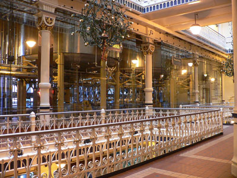
Jeff P from Berkeley, CA, USA, CC BY 2.0, via Wikimedia Commons; Image Size Adjusted
.jpg){kind=link}
Anheuser-Busch Brewery
Historic brewery offering guided tours, beer-making exhibits, Clydesdale horse stables, tasting experiences, and large-scale brewing operations.
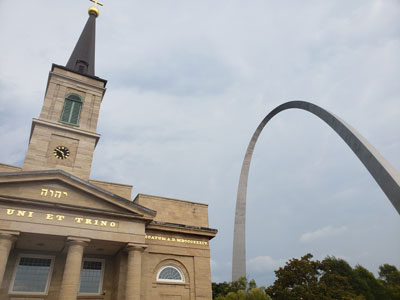
Jeff P from Berkeley, CA, USA, CC BY 2.0, via Wikimedia Commons; Image Size Adjusted
Basilica of St. Louis, King of France
First cathedral west of the Mississippi River and until 1845 the only parish church in the city of St. Louis
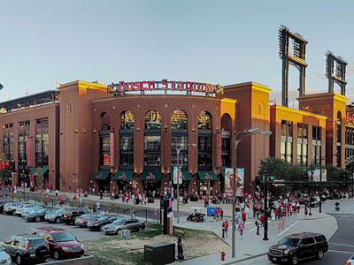
Jeff P from Berkeley, CA, USA, CC BY 2.0, via Wikimedia Commons; Image Size Adjusted
Busch Stadium
Baseball park located in St. Louis, is the home of the St. Louis Cardinals, the city's Major League Baseball (MLB) franchise
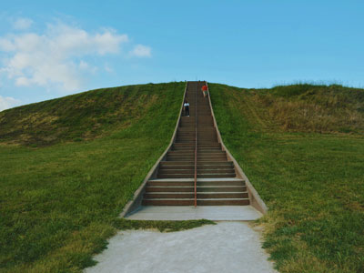
Jeff P from Berkeley, CA, USA, CC BY 2.0, via Wikimedia Commons; Image Size Adjusted
Cahokia Mounds State Historic Site
Site of a pre-Columbian Native American city directly across the Mississippi River from modern St. Louis
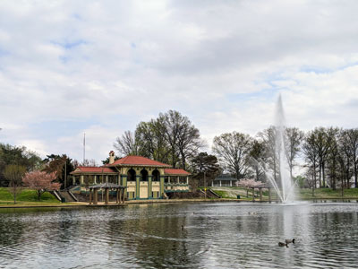
Jeff P from Berkeley, CA, USA, CC BY 2.0, via Wikimedia Commons; Image Size Adjusted
Carondelet Park
Established in 1875, it is the third largest park in the city of St. Louis.
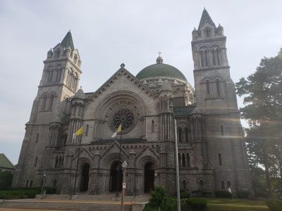
Jeff P from Berkeley, CA, USA, CC BY 2.0, via Wikimedia Commons; Image Size Adjusted
Cathedral Basilica of Saint Louis
Known for its large mosaic installation (which is one of the largest in the Western Hemisphere), burial crypts, and the addition of an outdoor sculpture to promote racial harmony
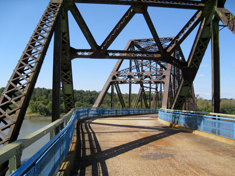
Jeff P from Berkeley, CA, USA, CC BY 2.0, via Wikimedia Commons; Image Size Adjusted
Chain of Rocks Bridge
Bridge spans the Mississippi River on the north edge of St. Louis with a 22-degree bend occurring at the middle of the crossing
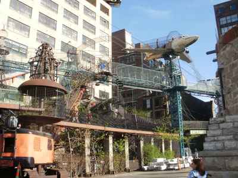
Jeff P from Berkeley, CA, USA, CC BY 2.0, via Wikimedia Commons; Image Size Adjusted
City Museum
Museum whose exhibits consist largely of repurposed architectural and industrial objects, housed in the former International Shoe building in the Washington Avenue Loft District
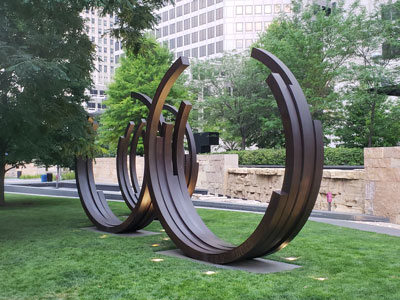
Jeff P from Berkeley, CA, USA, CC BY 2.0, via Wikimedia Commons; Image Size Adjusted
Citygarden Sculpture Garden
Urban park and sculpture garden in St. Louis in the city's "Gateway Mall" area
Contemporary Art Museum St. Louis
Light-filled gallery complex presenting rotating exhibitions, installations, and programs that emphasize experimental approaches to contemporary visual culture.
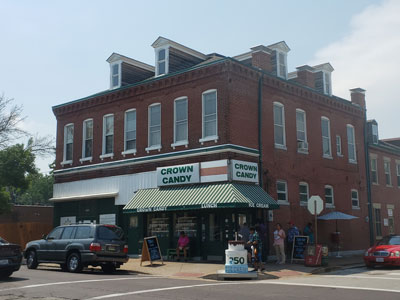
Jeff P from Berkeley, CA, USA, CC BY 2.0, via Wikimedia Commons; Image Size Adjusted
Crown Candy Kitchen
St. Louis landmark, the oldest operating soda fountain in the metropolitan area, and one of the oldest in the country
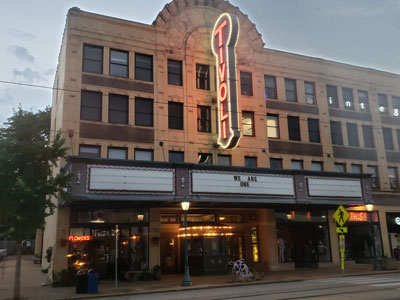
Jeff P from Berkeley, CA, USA, CC BY 2.0, via Wikimedia Commons; Image Size Adjusted
Delmar Loop
Eight-block entertainment and retail district featuring specialty shops, restaurants, live music venues, public art, and the St. Louis Walk of Fame.
Eads Bridge
A landmark steel arch bridge carrying road, rail, and pedestrian traffic while showcasing one of the greatest engineering achievements of the nineteenth century.
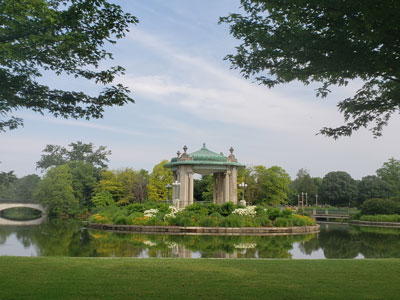
Jeff P from Berkeley, CA, USA, CC BY 2.0, via Wikimedia Commons; Image Size Adjusted
Forest Park
Park covers 1,326 acres (5.37 km2) and is known as the "Heart of St. Louis", featuring a variety of attractions, including the St. Louis Zoo, the St. Louis Art Museum, the Missouri History Museum, and the St. Louis Science Center
Jeff P from Berkeley, CA, USA, CC BY 2.0, via Wikimedia Commons; Image Size Adjusted
Gateway Arch National Park
National park consists of the Gateway Arch, a steel catenary arch that has become the definitive icon of St. Louis; a 91-acre (36.8 ha) park; the Old Courthouse where the Dred Scott case originated; and the 140,000 sq ft (13,000 m2) museum
Grant’s Farm
Historic family attraction combining expansive parkland, free-roaming wildlife habitats, animal encounters, and preserved estate buildings connected to a U.S. president and a brewing dynasty.
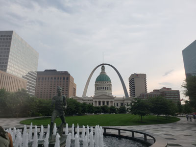
Jeff P from Berkeley, CA, USA, CC BY 2.0, via Wikimedia Commons; Image Size Adjusted
Kiener Plaza
Downtown civic park featuring fountains, open lawns, public art, event spaces, a playground, and views of surrounding landmarks.
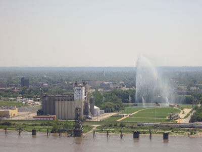
Jeff P from Berkeley, CA, USA, CC BY 2.0, via Wikimedia Commons; Image Size Adjusted
Malcolm W. Martin Memorial Park
Park directly across from the Gateway Arch known for the Gateway Geyser, a fountain that lifts water up to 630 feet (192 m) and an elevated viewing point overlooking the river
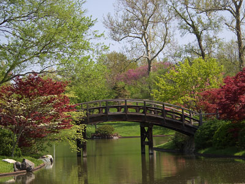
Jeff P from Berkeley, CA, USA, CC BY 2.0, via Wikimedia Commons; Image Size Adjusted
Missouri Botanical Garden
National Historic Landmark featuring expansive botanical collections, themed gardens, conservatories, and one of the nation's oldest continuously operating botanical gardens.
Missouri History Museum
Neoclassical museum complex presenting immersive exhibits, artifacts, and interactive spaces that interpret regional, national, and cultural history across centuries.
National Blues Museum
Interactive music museum showcasing the history, artists, and cultural influence of blues through artifacts, multimedia exhibits, and live performance spaces.
National Museum of Transportation
Expansive open-air and indoor museum displaying historic trains, automobiles, aircraft, and transit vehicles that trace the evolution of human movement.
Saint Louis Art Museum
Comprehensive fine arts institution housing an encyclopedic collection spanning ancient civilizations to modern works across painting, sculpture, and decorative arts.
Saint Louis Science Center
Hands‑on science complex featuring interactive exhibits, immersive theaters, and planetarium experiences designed to spark curiosity across physics, biology, space, and technology.
Saint Louis Zoo
World‑class zoological park offering immersive habitats, conservation‑focused exhibits, and diverse animal collections from ecosystems around the globe.
Samuel Cupples House
Lavish Romanesque Revival mansion showcasing intricate stonework, carved wood interiors, stained glass, and museum galleries displaying historic fine and decorative arts.
Scott Joplin House State Historic Site
Restored nineteenth‑century residence interpreting the life, music, and cultural legacy of a pioneering American composer through period rooms and immersive sound.
Soldiers Memorial Military Museum
Art Deco memorial and museum honoring military service through immersive galleries, historic artifacts, and powerful storytelling centered on regional and national sacrifice.
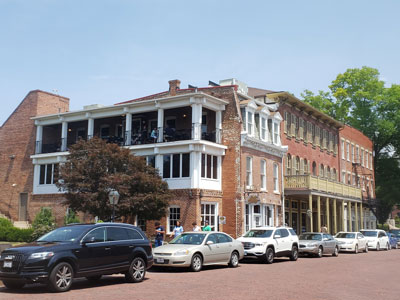
Jeff P from Berkeley, CA, USA, CC BY 2.0, via Wikimedia Commons; Image Size Adjusted
St Charles Historic District
Preserved riverfront district featuring brick streets, historic buildings, specialty shops, restaurants, and landmarks associated with early American frontier history.
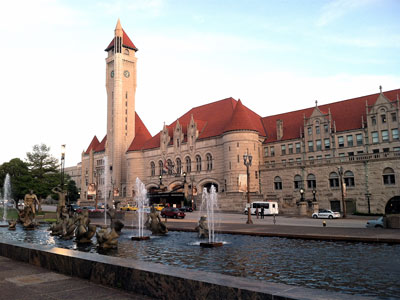
Jeff P from Berkeley, CA, USA, CC BY 2.0, via Wikimedia Commons; Image Size Adjusted
St Louis Union Station
Historic railroad terminal transformed into an entertainment complex featuring attractions, dining, shopping, event spaces, and a landmark hotel.
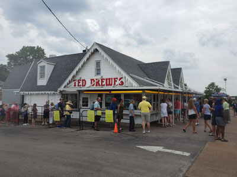
Jeff P from Berkeley, CA, USA, CC BY 2.0, via Wikimedia Commons; Image Size Adjusted
Ted Drewes Frozan Custard
Historic frozen custard stand known for handcrafted frozen treats, signature concretes, and a long-standing tradition of serving customers since 1929.
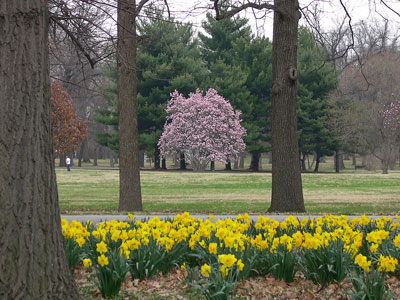
Jeff P from Berkeley, CA, USA, CC BY 2.0, via Wikimedia Commons; Image Size Adjusted
Tower Grove Park
Historic urban park featuring Victorian pavilions, landscaped gardens, walking paths, ornamental structures, and extensive green space for recreation and events.
Ulysses S. Grant National Historic Site
Preserved historic estate featuring the home and grounds associated with the early life, family, and agricultural pursuits of America's eighteenth president and Civil War general.
Overview
St. Louis is a major city in Missouri on the west bank of the Mississippi River, just below its confluence with the Missouri River, and it is known as the "Gateway to the West." Its most famous landmark is the Gateway Arch, the tallest man-made monument in the United States at 630 feet, which commemorates the westward expansion of the country. St. Louis is also known for its baseball, its blues and jazz, its food, such as toasted ravioli, gooey butter cake, and St. Louis-style barbecue and pizza, and for hosting the 1904 World's Fair and Olympic Games.
Visitors come to St. Louis for the Arch and the Gateway Arch National Park, and for the many free attractions in Forest Park, including the Saint Louis Zoo and the Saint Louis Art Museum. They also come for the Missouri Botanical Garden, the City Museum, the Anheuser-Busch Brewery, and Cardinals baseball at Busch Stadium. It is a friendly and affordable city with neighborhoods such as the Delmar Loop, Soulard, and the Hill with their own character.
History
French fur traders Pierre Laclede and Auguste Chouteau founded St. Louis in 1764 and named it for King Louis IX of France, and the city passed to Spain and then back to France before it became part of the United States with the Louisiana Purchase in 1803. Lewis and Clark began their expedition nearby in 1804, and St. Louis became the main outfitting point for the fur trade and westward travel. In the 1800s German and Irish immigrants flocked to the city, which became a center for brewing, shipping, and manufacturing, and the Dred Scott case was heard in the Old Courthouse. In 1904, the city hosted the Louisiana Purchase Exposition and the Summer Olympics, and the Arch was completed in 1965.
Sightseeing and Popular Landmarks
The Gateway Arch, designed by Eero Saarinen, has a tram that takes visitors to an observation deck at the top, and the Old Courthouse in the park has exhibits on the Dred Scott case. The Cathedral Basilica of Saint Louis has one of the largest mosaic collections in the world, and St. Louis Union Station is a restored railway station. Other sights include the Eads Bridge, the Chain of Rocks Bridge, Citygarden, the Delmar Loop, and Ted Drewes Frozen Custard.
Culture and Museums
St. Louis has many free museums. The Saint Louis Art Museum, the Missouri History Museum, the Saint Louis Science Center, and the Saint Louis Zoo are all in Forest Park, and the Contemporary Art Museum is also free. The National Blues Museum and the Scott Joplin House honor the city's music, and the National Museum of Transportation and the City Museum, a playground made from salvaged building parts, are also popular. The Samuel Cupples House and the Ulysses S. Grant National Historic Site are historic homes.
Parks
Forest Park, the site of the 1904 World's Fair, is larger than New York's Central Park and has a zoo, an art museum, a history museum, a science center, an outdoor opera theater called the Muny, and lakes and trails. Tower Grove Park is a Victorian park with pavilions and a farmers market, and Carondelet Park and Malcolm W. Martin Memorial Park have views of the Arch and the river. The Missouri Botanical Garden is one of the oldest botanical gardens in the country and has a Japanese garden and the Climatron geodesic dome.
Sports
St. Louis has several professional teams. The St. Louis Cardinals of Major League Baseball, one of the most successful franchises in baseball with 11 World Series titles, play at Busch Stadium, and the St. Louis Blues of the NHL, who won the Stanley Cup in 2019, play at the Enterprise Center. St. Louis City SC of Major League Soccer began play in 2023 at CityPark.
Seasons and Weather
St. Louis has a humid subtropical climate with hot, humid summers and cool winters. Summer highs are in the upper 80s°F, winter highs are in the 40s°F, and snowfall averages about 18 inches. Spring and fall are the best seasons, and thunderstorms, tornadoes, and ice storms are possible in spring and winter.
This article uses material from Wikipedia as well as information from official tourism and institutional sources. Key references include Explore St. Louis, Gateway Arch National Park, Saint Louis Zoo, Saint Louis Art Museum, Missouri Botanical Garden, St. Louis Cardinals, and National Weather Service St. Louis. Wikipedia material is from the articles "St. Louis" and "History of St. Louis", and is available under the Creative Commons Attribution-Share-Alike License 3.0.